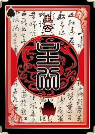
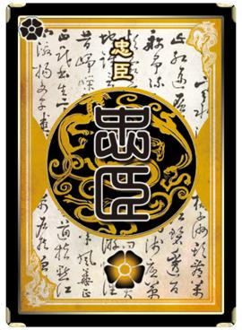
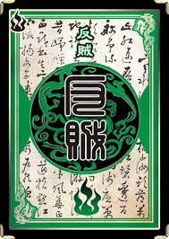

Identity Mode is the most popular game mode in Legends ofthe Three Kingdoms. Players are randomly assigned different identities, such as Lord, Loyalist, Rebel, or Spy, and each identity has a different goal.
Players must use strategy, teamwork, and their hero's skills to achieve victory.
The Lord is the leader of the game. The Lord must work with the Loyalists to defeat all the Rebels and the Spy while protecting themselves from being eliminated.


The Loyalist supports and protects the Lord. Their goal is to help the Lord survive and eliminate all the enemies by working together.
The Rebel works with other Rebels to eliminate the Lord. Rebels must cooperate and use strategy to defeat the Lord before being eliminated.
